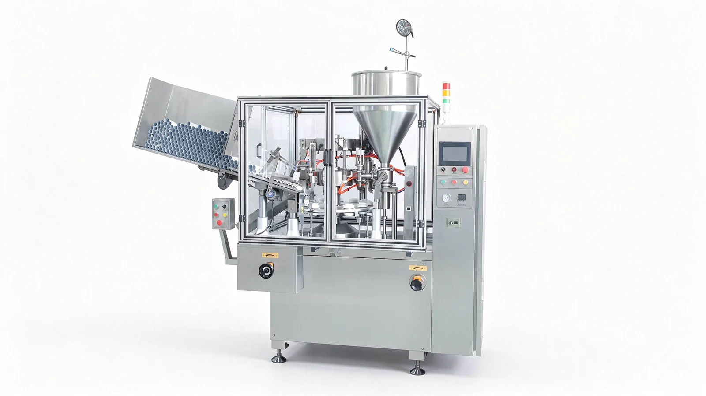
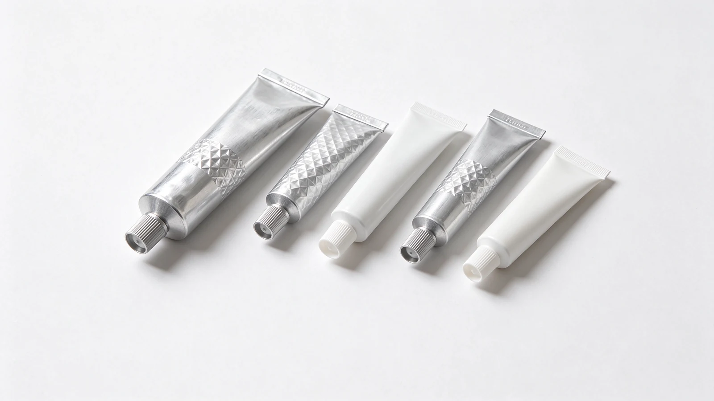

Complementary Machines
Machines that run with this filler.
A GMP-built filling and sealing machine for plastic and composite tubes, and for bottle-type containers in the same size range. The tube is picked from the magazine, filled to the set volume, sealed at the tail and coded with the batch and production date in one cycle.
Filling covers 5-500 ml with ±0.5 % accuracy at 30-60 pieces per minute, and the PLC runs the machine through a stored program with the fill volume, seal temperature and coding set from the panel. The frame, guards and product contact parts are built for cosmetics, pharmaceutical, food and adhesive filling under GMP practice.

Tube, fill, speed and electrical data for the standard machine. Tube diameter and fill volume are fixed at order.
| Application | Filling, sealing and batch coding of tubes and bottle-type containers |
| Tube material | Plastic and composite tubes |
| Tube diameter | Ф10-60 mm |
| Tube length | 50-250 mm, customisable |
| Fill volume | 5-500 ml, adjustable |
| Fill accuracy | ≤ ±0.5 % |
| Capacity | 30-60 pieces per minute |
| Motor power | 2 kW, 380 V / 220 V, 50 Hz |
| Sealing power | 3 kW |
| Dimensions | 2,500 × 1,020 × 1,980 mm |
| Machine weight | 1,100 kg |
| Control | PLC programmable controller, programmed cycle |
| Coding | Batch number and production date in the same cycle |
| Compliance | Designed and built to GMP requirements |
* Specifications as supplied for this configuration. Final data confirmed on the proforma invoice.
Data is grouped by tube handling, filling and sealing.
Magazine, orientation and transfer
| Tube magazine | Vertical magazine, tubes loaded in bulk |
| Tube material | Plastic and composite tubes |
| Tube diameter | Ф10-60 mm |
| Tube length | 50-250 mm, customisable |
| Orientation | Tube upright through the stations |
| Transfer | Rotary or linear transfer through fill, seal and code |
Volume, accuracy and product range
| Fill volume | 5-500 ml, adjustable |
| Fill accuracy | ≤ ±0.5 % |
| Product | Liquid to high-viscosity paste |
| Dosing | Positive-displacement dosing from the hopper |
| Hopper | Product hopper with level control |
| Changeover | Fill volume set from the panel |
Seal, code and machine build
| Seal type | Tail seal, heated jaws |
| Sealing power | 3 kW |
| Coding | Batch number and production date |
| Motor power | 2 kW at 380 V / 220 V, 50 Hz |
| Capacity | 30-60 pieces per minute |
| Build | GMP design, guards, low noise |
| Noise | Low-noise operation for a clean room |
Machine and finished tube in the standard configuration.

What the machine changes for a tube filling room.
The tube passes fill, tail seal and coding without being taken off the machine, so the batch code always matches the fill.
A PLC-driven cycle with a 5-500 ml fill range keeps output steady for cosmetic and pharma batches.
Positive-displacement dosing holds volume across the batch, which matters for labelled net content.
Frame, guards and contact parts are built for cosmetics, pharmaceutical and food filling under GMP practice.
The dosing set handles high-viscosity paste as well as free-flowing liquids.
Fill volume and seal temperature are changed from the panel rather than by swapping mechanical parts.
Where this machine is used.
Utilities and room data needed before the machine is quoted.
| Power supply | 380 V / 220 V, 50 Hz |
| Installed power | 2 kW motor + 3 kW sealing |
| Compressed air | 0.6-0.7 MPa, dry |
| Floor | Level floor; machine 2,500 × 1,020 mm |
| Product supply | Hopper fed manually or from a buffer tank |
| Clean room | GMP area with washable floors and walls |
| Ambient | 5-40 °C, humidity ≤85 % |
| Cleaning | Drain and wash points near the hopper and dosing |
What buyers ask before ordering a tube filler.
Plastic and composite tubes from Ф10 to 60 mm, 50-250 mm long; other lengths are customised.
5-500 ml, adjustable from the panel, at ±0.5 % accuracy.
Yes. The dosing set is matched to viscosity, from liquids to high-viscosity paste.
Yes. The machine is designed to GMP requirements for cosmetics, pharmaceutical and food filling.
Batch number and production date are coded in the same cycle as filling and sealing.
Machines that run with this filler.
Send the tube drawing, product viscosity and target fill; we will quote the machine with the magazine and dosing set matched to your tube.